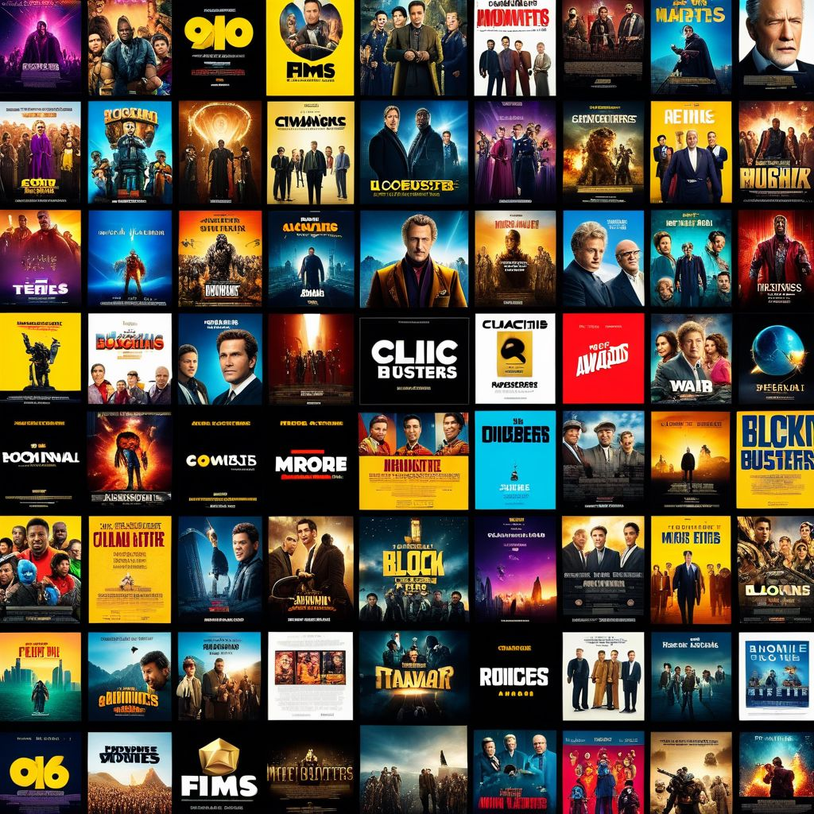

Натисни, щоб побачити останні новинки
Цікаві факти
- У фільмі "Титанік" вода у фінальній сцені була крижаною, щоб передати реалістичність.
- Анімація "Король Лев" базувалася на реальних дослідженнях дикої природи в Африці.
- Найдорожчий фільм усіх часів — "Аватар: Шлях води".
- У зйомках "Матриці" використовували унікальну технологію "bullet time", яка стала революційною для
кіно.
Кіно (кінематограф) — це вид мистецтва, що базується на створенні рухомих зображень, які розповідають
історії, передають ідеї, емоції та враження. Воно є потужним засобом впливу на аудиторію через візуальний і
звуковий досвід.
Фільм — це кінцевий продукт кіноіндустрії, окрема стрічка, створена для перегляду глядачами. Це
може бути художній фільм (з вигаданим сюжетом), документальний (про реальні події), анімаційний,
експериментальний чи будь-який інший.
Серіал — це формат кіно- чи телевізійного мистецтва, який складається з кількох пов'язаних між собою епізодів,
що утворюють одну загальну історію або серію історій із спільними героями, місцем дії чи темою.
Шукаєте ідеальний фільм для вечора? Ми допоможемо знайти те, що вам до душі! Від новинок до
вічної класики — наш сайт стане вашим провідником у світ кінематографу.
Top films
Ласкаво просимо у світ кіно!